Braille Code of
Chemical Notation
1997
Home Index Search Chemistry
Rules
1. Braille Indicators
2. General Format
3. Signs and Symbols
4. Formulas/Equations
5. Labels
6. Type Forms
7. Super/Subscripts
8. Names
9. Abbreviations
Index of Symbols
Index
BRL Courses
Intro to Braille
Braille Transcribers
Specialized Codes
BRL Reference Desk
Summary of Rules
Contractions Lookup
Contractions List
Braille only contractions
Problem Words
Webster's Dictionary
Braille Formats (BANA rules for transcribing textbooks)
Reading List
Other Resources
Contact instructor
Flashcard program (Java)
Downloadable Software
Braille Supplies
Other Links
American Printing House for the Blind (APH)
Braille Authority of North America (BANA)
National Braille Association (NBA)
National Library Service (NLS, Library of Congress)
Credits
|
5. LABELS
5.1 Labels to Chemical Expressions. In print, labels or explanations to
chemical expressions often appear in the margin, to the right or left, above or below the material
being labeled. These labels may applly to the complete expression or structure or to portions of
it. In braille, the labels are normally placed before the expression, aligned with the first cell
of the expression and must be preceded by a blank line. If it is not practical to place the
label above the material without disrupting the arrangement, alternate methods must be used. At
times it is possible to arrange the labels in the form of an equation. (See Example 5.1-6)
When the labels apply to only some molecules or to a potion of a molecule, align the label with
the molecule or the portion being labeled. (See Examples 5.1-7 and 5.1-8)
Care must be taken to place labels in such a way that they do not interfere with the actual
structure and yet make it clear as to which portion of the structure is being labeled.
Sometimes it will be necessary to spur in lead lines or horizontal braces. A change in format
requires a transcriber's note before the transcription.
Example 5.1-1: (print label below horizontal, displayed structure)
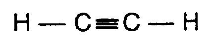
ethyne (acetylene)
e?yne (acetyl5e)
,h_3],c_=],c_3],h
Example 5.1-2: (print label below spatial structure)
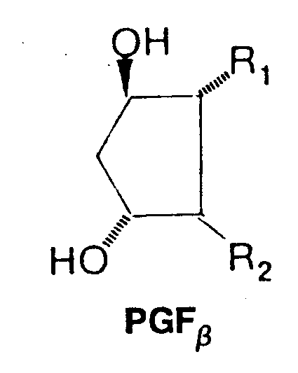
Example 5.1-3 (print label to the right of spatial structure)
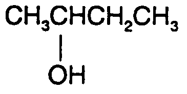
Example 5.1-4: (print label in left margin)
Alcohol R OH
,alco3ol
,r_3],o,h
Example 5.1-5: (print label above spatial structure)
Modern symbolism for benzene ,mod]n
symbolism =
b5z5e
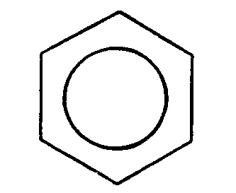
Example 5.1-6: (in print, each molecule or atom labeled below; labels in equation
form in braille; must be explained in a transcriber's note.) [See Example 4.4.3-16 for an
example of an appropriate note.]
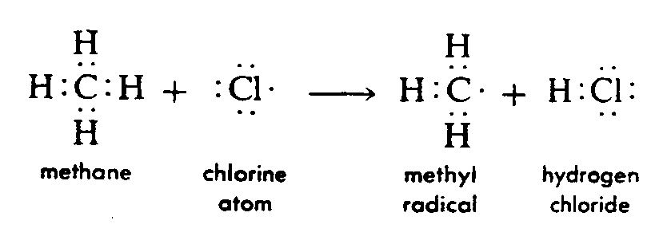
1methane+chlorine
atom
2 $o
methyl radecal+hydrogen
*loride
3
4 ,h
,h
5
?
?
?
?
6,h?,c?,h+?,cl* $o
,h?,c*+,h?,cl?
7
?
?
?
?
8 ,h
,h
Example 5.1-7: (only one of the molecules labeled in print; label aligned above the labeled
molecule in braille; spurred line added for orientation
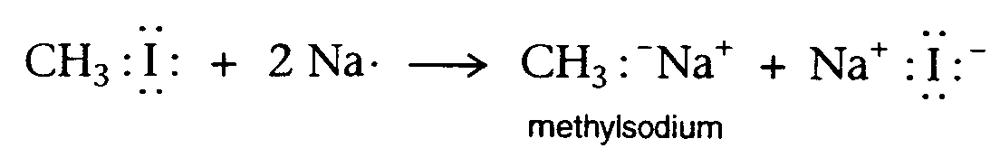
---braille goes here---
Example 5.1-8: (label on portion of a molecule requires a spurred brace; to avoid going to
another braille page, displayed structure starts in cell 1 with runover at comparison sign also
starting in cell 1.)
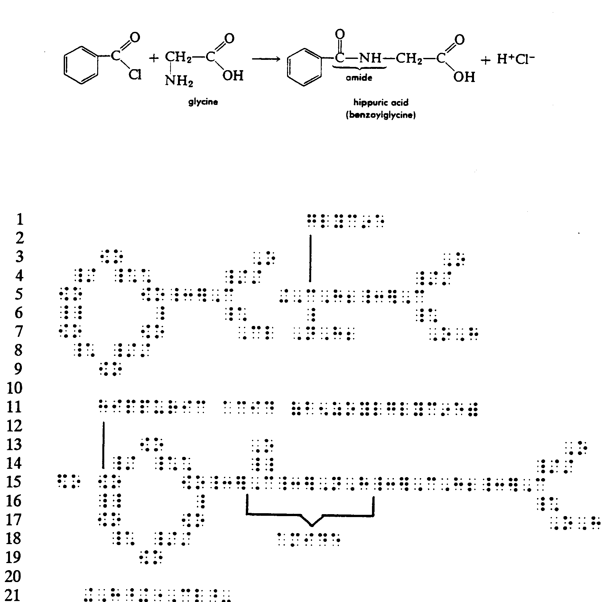
---braille graphic goes here---
Example 5.1-9: (primary label as well as individual labels)
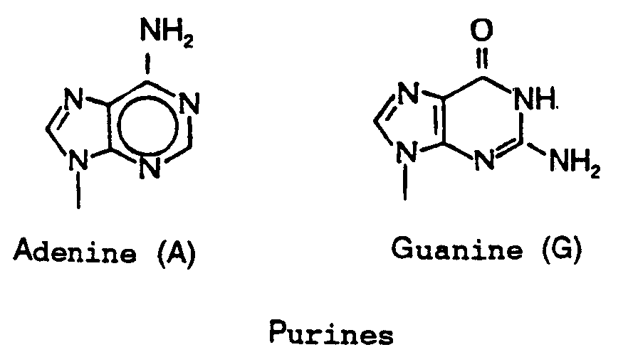
---braille graphic goes here----
----braille graphic goes here-----
5.2 Remarks or Conditions. Remarks or conditions should be treated in the same manner
as remarks or conditions to mathematical expressions blocked 6 cells to the right of the start of
the expression.
Example 5.2-1: (structure with marginal remarks; transcriber's grouping symbols used; what
appears as a bold dot is a normal electron dot in this text)
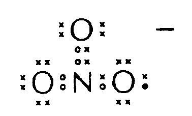
In NO3-, all bond lengths are equal.
1 [,o[
,')^-
2
>
,')
3 o
> o
,')
4 [,o#,n>,o%,')
5 o
o
,')
6
----continue braille here----
Example 5.2-2: (print shows remarks following on same line as spatial structure)
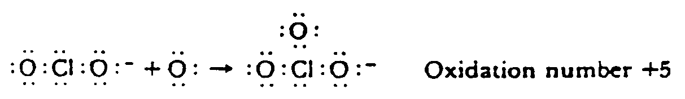
----braille goes here----
5.3 Labeled SYMBOLS and Bonds.These labels are often called markers or numbered atoms.
They may consist of numbers, letters, Greek letters, asterisks or other symbols and may appear
in conjunctoin with SYMBOLS for atoms, vertices, on ring structures or bonds. The printer
frequently places the labels in the most convenient positions. In lenear structures, they usually
occur directly over or under the SYMBOL or bond to which they apply. In spatial structures,
they may appear as if they were superscripts or subscripts. The transcriber can deterrmine from
context the meaning of the material. Normally the following are superscripts or subscripts.
Electron charge or, occasionally, isomer number as in U238; right superscript.
Number of atoms or, if with R or Greek letter, an identifier; right subsript.
Mass number; left superscript.
Atomic number; left subscript.
Primes with R (unspecified chain or ring) or Greek letter; identifiers.
5.3.1 Chains. In braille transcriptoins, consistent placement of label or marker is
important although not always possible. When possible, the label should be placed immediately above
the applicale SYMBOL or bond. When vertical bonds are present and SYMBOLS are labeled, the labels
should be placed to the left of the bond. When oblique bonds are present, place the label on the
same side of the bond as the symbol to which it applies.
NOTE: Examples 5.3.1-1 and 5.3.1-2 are from the same text and show print placement of numbers
varied to accommodate difference in structure.
Example 5.3.1-1 (numbers below SYMBOLS in print)
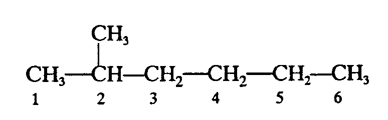
---braille goes here-----
Example 5.3.1-2: (numbers above SYMBOLS)
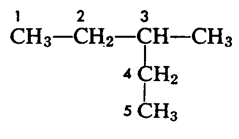
------braille goes here-----
Example 5.3.1-3: (portion of a text page illustrating inconsistent placement of numbers; some
appear as right superscripts and others as left superscripts)
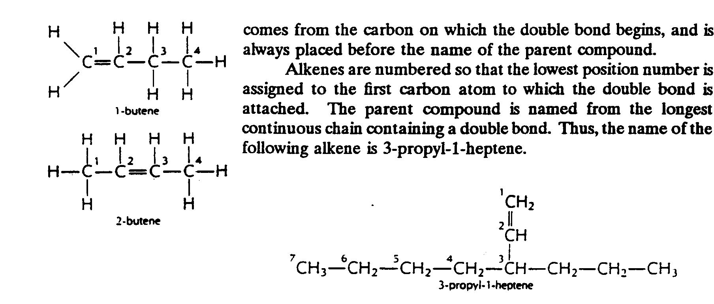
--------braille goes here-----
Example 5.3.1-4 (numbers adjacent to oblique bonds in print; a superscript applies to the
entire structure)
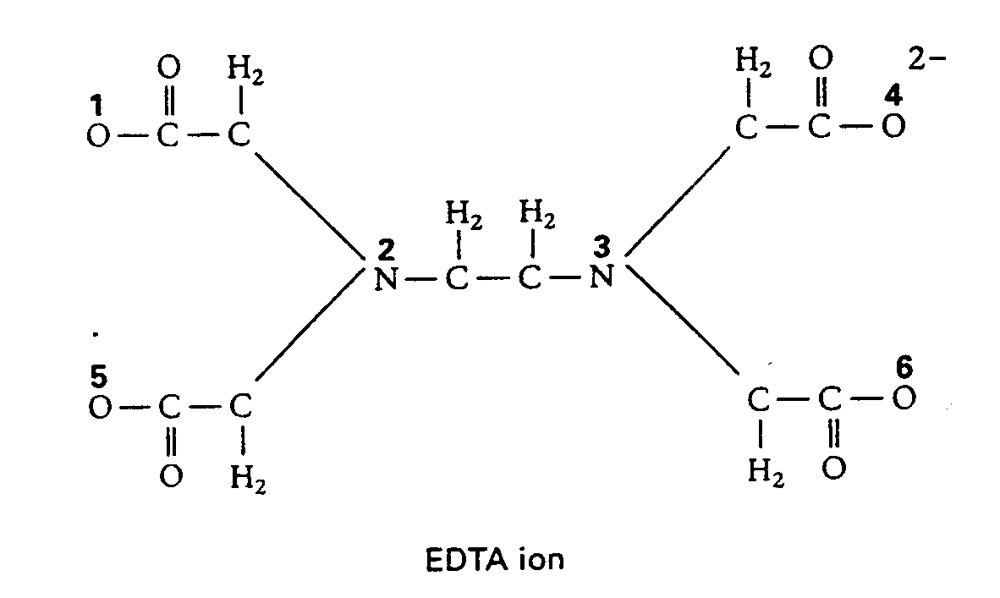
Example 5.3.1-5: (oxidation numbers above SYMBOLS)
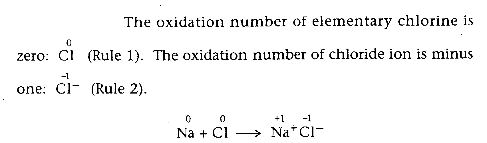
Example 5.3.1-6: (oxidation numbers above SYMBOLS requiring spacing
adjustments)
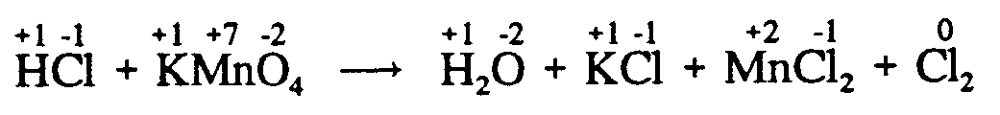
Example 5.3.1-7: (oxidation numbers combined with electron charge symbols)
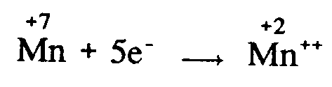
Example 5.3.1-8: (positive and negative signs above SYMBOLS)
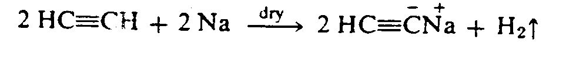
Example 5.2.1-9: (positive and negative signs within circles above SYMBOLS
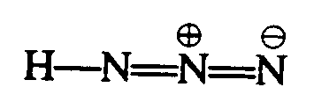
Example 5.3.1-10: (number with negative sign above SYMBOLS
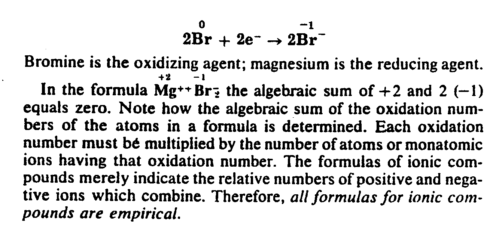
------a lot of braille goes here----
Example 5.3.1-11: (positive sign below SYMBOL in print)
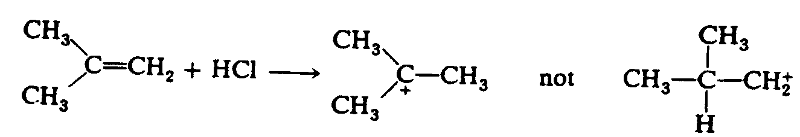
-----Braille goes here----
Example 5.3.1-12: (oxidatoin sign combined with electron dots)
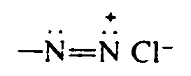
Example 5.3.1-13: (asterisks labeling atoms being discussed in text)
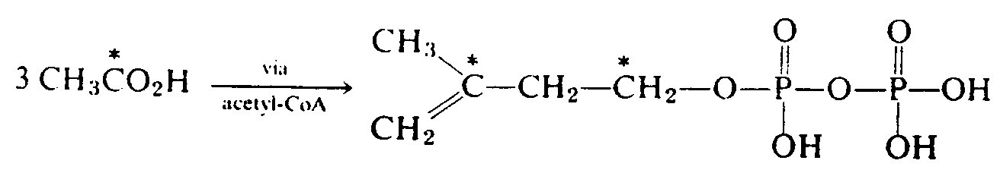
Example 5.3.1-14: (asterisks used as markers)
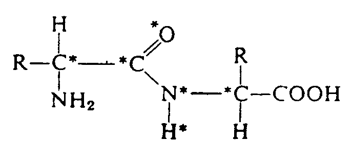
The atoms marked with an asterisk tend to lie in a single plane.
----braille goes here----
Example 5.3.1-15: (asterisks used to mark asymmetric carbon atoms)
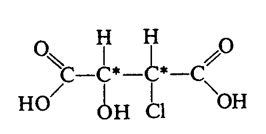
Example 5.3.1-16: (alpha amino acid carbon labeled)
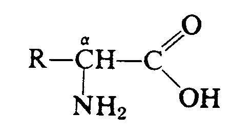
Example 5.3.1-17: (amino acid with both alpha and beta carbons labeled)
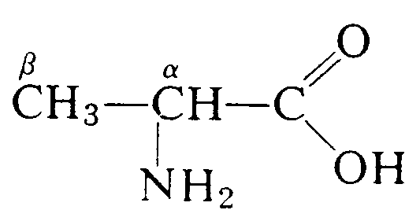
Example 5.3.1-18: (atoms marked with deltas carrying subscripts)
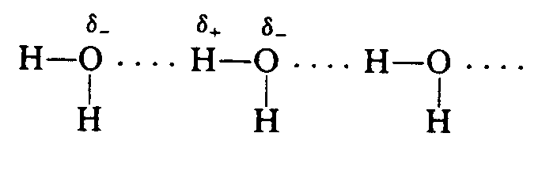
Example 5.3.1-19: (bar over P to show that it is an abbbreviation for permutite, not phosphorus)
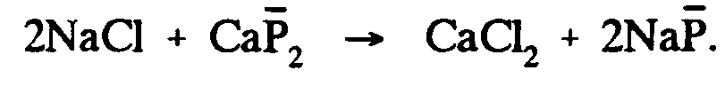
Example 5.3.1-20 (dot over letters as identifiers; both normal and small capital letters included)
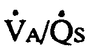
",v<*]@",a_/",q<*]@",s
5.3.2 Rings. In ring structures, the labels should be placed outside the ring regardless of the
placement in print and should appear above the labeled SYMBOLS to which they apply. The label to a
top vertex with no bonds above should be placed immediately above the SYMBOL. If one applies to a
bottom vertex with no bonds below, place the label immediately below the SYMBOL
Example 5.3.2-1: (joined rings; outer vertices numbered)
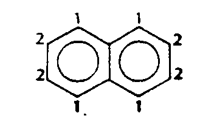
Example 5.3.2-2: (simple ring witrh some atoms included; each vertex and SYMBOL labeled)
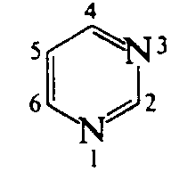
Example 5.3.2-3: (simple ring with braches; each vertex numbered)
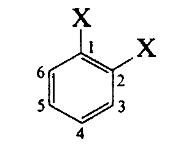
Example 5.3.2-4: (rings with numbers inside the rings)
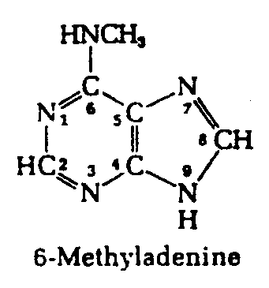
Example 5.3.2-5: (ring with atoms included; some numbered; broken oblique bond)
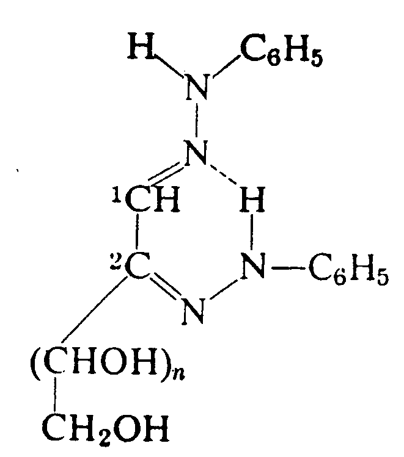
Example 5.3.2-6: (rings with atoms included; numbered randomly)
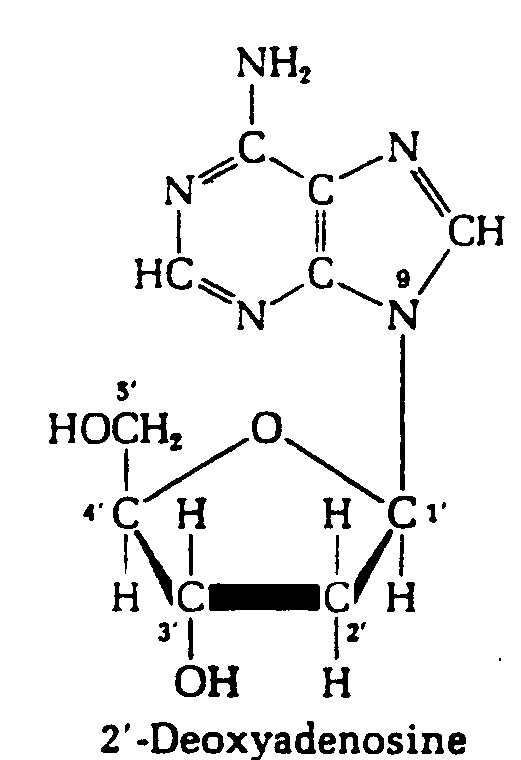
----graphic goes here-----
Example 5.3.2-7: (ring with braches; numbers appear to be subscripts and superscripts)
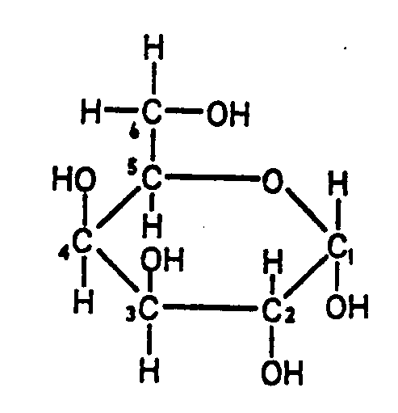
Example 5.3.2-8: (oddly shaped ring structure must be spurred in)
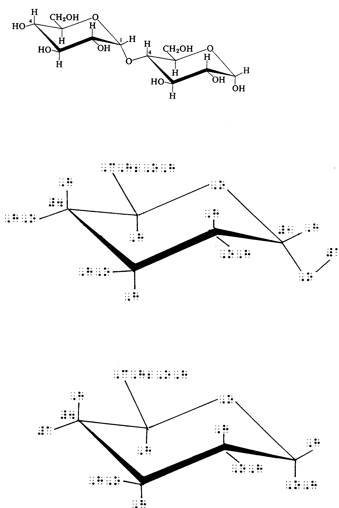
Example 5.3.2-9: (two representation of teh same steroid ring; the second must be drawn)
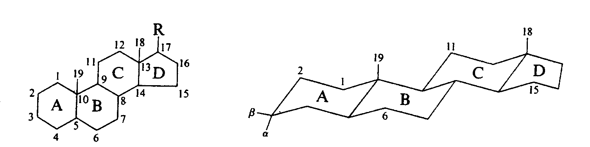
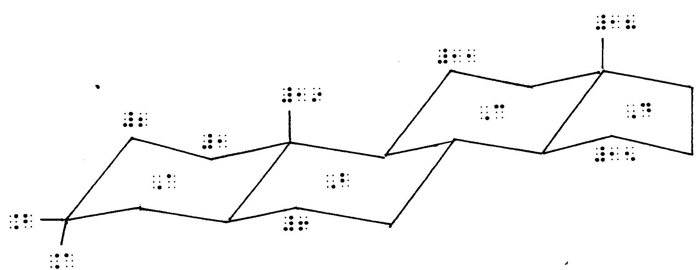
Example 5.3.2-10: (ring structure with long chains attached; runovers require runover locators.)
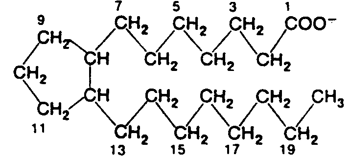
|
|
 Braille Authority of North American (BANA)
Braille Authority of North American (BANA)